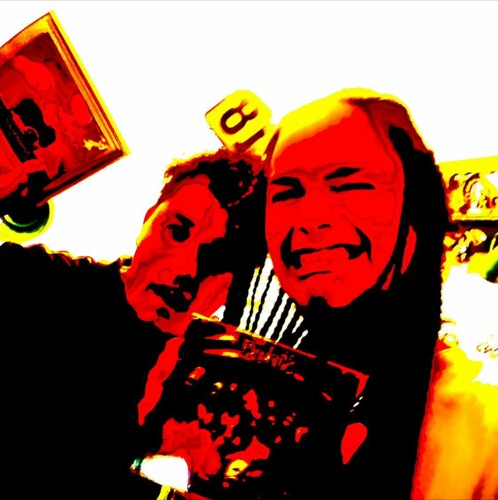

A Történet:----------------------------------------------------------------------------------------------------------------------------------------------------------------------------------------------------------------------------
Platformok:----------------------------------------------------------------------------------------------------------------------------------------------------------------------------------------------------------------------------
>Track Listing:--------------------------------------------------------------------------------------------------------------------------------------------------------------------------------------------------------------------
Albumok:
EP-k:
Hasmenés Single kiadásai:--------------------------------------------------------------------------------------------------------------------------------------------------------------------------------------------------------
Fostamás Single kiadásai:----------------------------------------------------------------------------------------------------------------------------------------------------------------------------------------------------------
Fekálius Maximus Single kiadásai:-----------------------------------------------------------------------------------------------------------------------------------------------------------------------------------------------
Hasmenés és Fostamás közös Zenéi:-------------------------------------------------------------------------------------------------------------------------------------------------------------------------------------------
Albumok:
Fostamás megbaszta anyádat album: () ---------------------------------------------------------------------------------------------------------------------------------------------------------------------------------------
Nem fogott a széntabletta album: () -------------------------------------------------------------------------------------------------------------------------------------------------------------------------------------------
|
Fostamás - Sokszínű fosás(ok) album: () --------------------------------------------------------------------------------------------------------------------------------------------------------------------------------------
EP-k: --------------------------------------------------------------------------------------------------------------------------------------------------------------------------------------------------------------------------------------------
Fúrások EP (Hasmenés & Fostamás): () --------------------------------------------------------------------------------------------------------------------------------------------------------------------------------------------
|  |
------------------------------------------------------------------------------------------------------------------------------------------------------------------------------------------------------------------------------------------------
MINDEN JOG FENNTARTVA! BY:ABYSS32